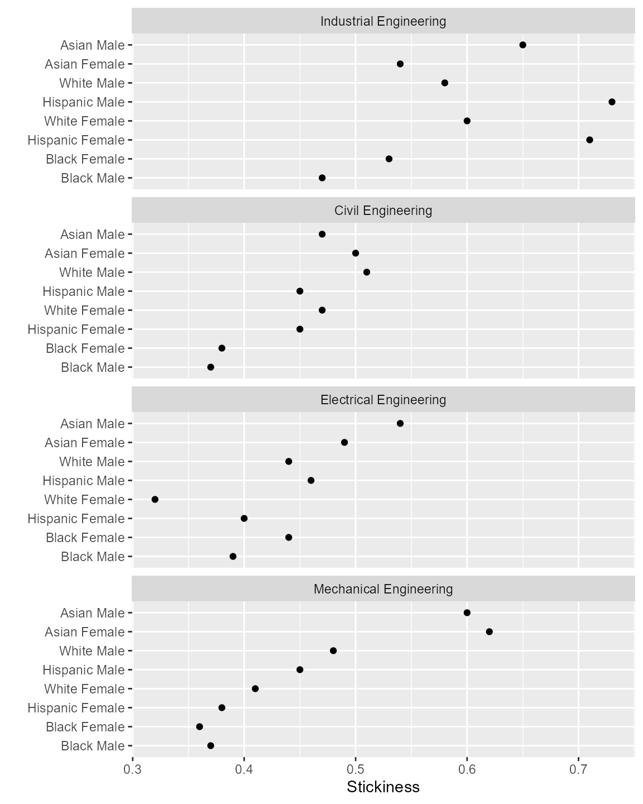

Longitudinal “stickiness” is the ratio of the number of students graduating in a program to the number of students ever enrolled in that program (Ohland et al., 2012).
Unlike the graduation rate metric, stickiness does not require that students matriculate and graduate in the same program. Every student counted in a program’s stickiness metric was enrolled in that program for at least one term. The program succeeded in attracting these students—stickiness tells us how well the program succeeded in retaining them.
midfieldr functions
subset_feasible() described in Feasible completion
prepare_multiway() described in Multiway graphs and tables
midfieldr built-in data sets
rep_group described in Identify programs
fye_start described in Handle FYE programs
packages
# packages used
library(midfieldr)
library(midfielddata)
library(data.table)
library(ggplot2)
# print max 20 rows, otherwise 10 rows each head/tail
options(datatable.print.nrows = 20, datatable.print.topn = 10)The programs in this case study are available as the built-in data set rep_group.
# examine the built-in data
rep_group
#> cip6 program
#> 1: 140801 Civil Engineering
#> 2: 140802 Civil Engineering
#> 3: 140803 Civil Engineering
#> 4: 140804 Civil Engineering
#> 5: 140805 Civil Engineering
#> 6: 140899 Civil Engineering
#> 7: 141001 Electrical Engineering
#> 8: 141003 Electrical Engineering
#> 9: 141004 Electrical Engineering
#> 10: 141099 Electrical Engineering
#> 11: 141901 Mechanical Engineering
#> 12: 143501 Industrial EngineeringYou may view its help page by running
? rep_groupFor readability we assign the program group to a new name.
# create a new memory location
program_labels <- copy(rep_group)We extract the CIP codes as a vector for subsetting data.
# vector of CIP codes for subsetting
cip6_we_want <- program_labels$cip6We use the vector of CIP codes to filter midfieldstudents, midfieldterms, and midfielddegrees to obtain the IDs students ever enrolled in the group of programs. We access all three datasets to ensure we obtain all students ever enrolled. Duplicates are expected but only unique observations will be retained.
# two columns we want from each data set
cols_we_want <- c("id", "cip6")
# subset students
rows_we_want <- midfieldstudents$cip6 %chin% cip6_we_want
students <- midfieldstudents[rows_we_want, ..cols_we_want]
# subset terms
rows_we_want <- midfieldterms$cip6 %chin% cip6_we_want
terms <- midfieldterms[rows_we_want, ..cols_we_want]
# subset degrees
rows_we_want <- midfielddegrees$cip6 %chin% cip6_we_want
degrees <- midfielddegrees[rows_we_want, ..cols_we_want]When studying engineering students we have to account for students enrolled in first-year engineering (FYE) programs. The predicted starting programs of FYE students in midfielddata are available as the built-in data set fye_start.
# examine fye data
fye_start
#> id start
#> 1: MID25783162 140901
#> 2: MID25783166 141901
#> 3: MID25783167 140901
#> 4: MID25783178 140701
#> 5: MID25783197 140701
#> 6: MID25783199 140301
#> 7: MID25783227 141001
#> 8: MID25783257 140701
#> 9: MID25783275 140501
#> 10: MID25783388 141901
#> ---
#> 5983: MID26648334 140801
#> 5984: MID26648354 140901
#> 5985: MID26648392 141901
#> 5986: MID26648417 140201
#> 5987: MID26648422 141901
#> 5988: MID26648435 141901
#> 5989: MID26648484 140801
#> 5990: MID26648508 140701
#> 5991: MID26648517 140801
#> 5992: MID26648544 141901You may view its help page by running
? fye_startSubset these data for our program group.
# subset FYE
rows_we_want <- fye_start$start %chin% cip6_we_want
cols_we_want <- c("id", "start")
fye <- fye_start[rows_we_want, ..cols_we_want]Rename the start variable to cip6 to match the students, terms, and degrees data.
# edit variable name before combining data
setnames(fye, old = "start", new = "cip6")
# examine the result
fye
#> id cip6
#> 1: MID25783166 141901
#> 2: MID25783227 141001
#> 3: MID25783388 141901
#> 4: MID25783428 140801
#> 5: MID25783441 140801
#> 6: MID25783491 141001
#> 7: MID25783553 140801
#> 8: MID25783606 141001
#> 9: MID25783648 140801
#> 10: MID25783753 141901
#> ---
#> 3819: MID26648222 141901
#> 3820: MID26648282 143501
#> 3821: MID26648283 141001
#> 3822: MID26648334 140801
#> 3823: MID26648392 141901
#> 3824: MID26648422 141901
#> 3825: MID26648435 141901
#> 3826: MID26648484 140801
#> 3827: MID26648517 140801
#> 3828: MID26648544 141901Next we bind the four sets of IDs in a data frame named ever (for “ever enrolled”) and reduce the data frame to its unique values.
# combine four data frames
data_to_bind <- list(students, terms, degrees, fye)
ever <- rbindlist(data_to_bind)
ever <- unique(ever)
# examine the result
ever
#> id cip6
#> 1: MID25792087 141901
#> 2: MID25796088 140801
#> 3: MID25799551 141001
#> 4: MID25799578 141001
#> 5: MID25808049 140801
#> 6: MID25814680 141901
#> 7: MID25816716 141901
#> 8: MID25818239 141001
#> 9: MID25825948 140801
#> 10: MID25836704 141901
#> ---
#> 12591: MID26648222 141901
#> 12592: MID26648282 143501
#> 12593: MID26648283 141001
#> 12594: MID26648334 140801
#> 12595: MID26648392 141901
#> 12596: MID26648422 141901
#> 12597: MID26648435 141901
#> 12598: MID26648484 140801
#> 12599: MID26648517 140801
#> 12600: MID26648544 141901We subset our data for program completion feasibility.
# students for whom completion is feasible
feasible_ids <- subset_feasible(id = ever$id)
# subset for feasible completion
rows_we_want <- ever$id %chin% feasible_ids
ever <- ever[rows_we_want]
# examine the result
ever
#> id cip6
#> 1: MID25792087 141901
#> 2: MID25796088 140801
#> 3: MID25799551 141001
#> 4: MID25799578 141001
#> 5: MID25808049 140801
#> 6: MID25814680 141901
#> 7: MID25816716 141901
#> 8: MID25818239 141001
#> 9: MID25825948 140801
#> 10: MID25836704 141901
#> ---
#> 9924: MID26616960 140801
#> 9925: MID26618344 143501
#> 9926: MID26618802 140801
#> 9927: MID26619158 140801
#> 9928: MID26621006 143501
#> 9929: MID26621906 141901
#> 9930: MID26623725 141001
#> 9931: MID26624428 143501
#> 9932: MID26625136 143501
#> 9933: MID26629213 140801We extract the unique IDs as a vector for subsetting data.
# vector of IDs for subsetting
ever_id <- unique(ever$id)Graduates are filtered from the degree data by ID and CIP.
# subset graduates
rows_we_want <- midfielddegrees$id %chin% ever_id &
midfielddegrees$cip6 %chin% cip6_we_want
cols_we_want <- c("id", "cip6", "term_degree")
grad <- midfielddegrees[rows_we_want, ..cols_we_want]
# examine the result
grad
#> id cip6 term_degree
#> 1: MID25783178 143501 20001
#> 2: MID25783197 140801 19911
#> 3: MID25783441 140801 19963
#> 4: MID25783491 141001 20001
#> 5: MID25783912 143501 20001
#> 6: MID25784334 140801 19963
#> 7: MID25784418 140801 19981
#> 8: MID25784489 140801 19931
#> 9: MID25784709 140801 19971
#> 10: MID25784742 140801 19943
#> ---
#> 4667: MID26696234 141901 20143
#> 4668: MID26696337 140801 20133
#> 4669: MID26696429 143501 20133
#> 4670: MID26696484 141901 20154
#> 4671: MID26696642 141001 20153
#> 4672: MID26696738 141901 20133
#> 4673: MID26696771 141001 20143
#> 4674: MID26696967 141901 20141
#> 4675: MID26697163 141901 20133
#> 4676: MID26697447 141001 20154We retained the term_degree variable because some students might have earned a second degree in a term after their first degree(s). We want to retain only those degrees earned in a student’s first degree term.
# keep the first degree term only
grad <- grad[, .SD[term_degree == min(term_degree)], by = id]
# select columns
grad <- grad[, .(id, cip6)]
# examine the result
grad
#> id cip6
#> 1: MID25783178 143501
#> 2: MID25783197 140801
#> 3: MID25783441 140801
#> 4: MID25783491 141001
#> 5: MID25783912 143501
#> 6: MID25784334 140801
#> 7: MID25784418 140801
#> 8: MID25784489 140801
#> 9: MID25784709 140801
#> 10: MID25784742 140801
#> ---
#> 4667: MID26696234 141901
#> 4668: MID26696337 140801
#> 4669: MID26696429 143501
#> 4670: MID26696484 141901
#> 4671: MID26696642 141001
#> 4672: MID26696738 141901
#> 4673: MID26696771 141001
#> 4674: MID26696967 141901
#> 4675: MID26697163 141901
#> 4676: MID26697447 141001In this case, the number of graduates did not change after checking for subsequent degrees, but it is always a possibility and should be examined.
Obtain race/ethnicity and sex variables keyed by ID. We will retain only those students for whom this information is known.
# obtain race/ethnicity and sex
rows_we_want <- midfieldstudents$id %chin% ever_id
cols_we_want <- c("id", "race", "sex")
demographics <- midfieldstudents[rows_we_want, ..cols_we_want]
demographics <- unique(demographics)
# examine the result
demographics
#> id race sex
#> 1: MID25783178 Black Male
#> 2: MID25783197 White Male
#> 3: MID25783227 White Male
#> 4: MID25783388 White Male
#> 5: MID25783441 White Male
#> 6: MID25783491 White Male
#> 7: MID25783553 White Male
#> 8: MID25783606 White Male
#> 9: MID25783753 White Male
#> 10: MID25783830 Black Male
#> ---
#> 9272: MID26696439 White Male
#> 9273: MID26696484 White Male
#> 9274: MID26696642 White Male
#> 9275: MID26696738 White Male
#> 9276: MID26696771 White Female
#> 9277: MID26696958 White Male
#> 9278: MID26696967 White Male
#> 9279: MID26697163 Hispanic Male
#> 9280: MID26697444 White Male
#> 9281: MID26697447 Asian MaleExamine the values for race and sex to determine which, if any, to omit from analysis.
unique(demographics$race)
#> [1] "Black" "White" "International" "Asian"
#> [5] "Hispanic" "Other" "Native American" "Unknown"
unique(demographics$sex)
#> [1] "Male" "Female"For our case study, we make the arbitrary decision to drop students identified as International, Other, and Unknown.
# filter for specific race/ethnicity categories
rows_we_want <- demographics$race %chin%
c("Asian", "Black", "Hispanic", "Native American", "White")
demographics <- demographics[rows_we_want]
# examine the result
demographics
#> id race sex
#> 1: MID25783178 Black Male
#> 2: MID25783197 White Male
#> 3: MID25783227 White Male
#> 4: MID25783388 White Male
#> 5: MID25783441 White Male
#> 6: MID25783491 White Male
#> 7: MID25783553 White Male
#> 8: MID25783606 White Male
#> 9: MID25783753 White Male
#> 10: MID25783830 Black Male
#> ---
#> 8937: MID26696439 White Male
#> 8938: MID26696484 White Male
#> 8939: MID26696642 White Male
#> 8940: MID26696738 White Male
#> 8941: MID26696771 White Female
#> 8942: MID26696958 White Male
#> 8943: MID26696967 White Male
#> 8944: MID26697163 Hispanic Male
#> 8945: MID26697444 White Male
#> 8946: MID26697447 Asian MaleSubset enrollees and graduates, retaining only those IDs for whom we have demographic information.
# subset for known race/ethnicity and sex
rows_we_want <- ever$id %chin% demographics$id
ever <- ever[rows_we_want]
rows_we_want <- grad$id %chin% demographics$id
grad <- grad[rows_we_want]Join the demographics to the ever-enrolled and graduates data.
# join demographics
ever <- merge(ever, demographics, by = "id", all.x = TRUE)
grad <- merge(grad, demographics, by = "id", all.x = TRUE)
# examine the result
ever
#> id cip6 race sex
#> 1: MID25783178 143501 Black Male
#> 2: MID25783197 140801 White Male
#> 3: MID25783227 141001 White Male
#> 4: MID25783388 141901 White Male
#> 5: MID25783441 140801 White Male
#> 6: MID25783491 141001 White Male
#> 7: MID25783553 140801 White Male
#> 8: MID25783606 141001 White Male
#> 9: MID25783753 141901 White Male
#> 10: MID25783830 141901 Black Male
#> ---
#> 9572: MID26696439 141901 White Male
#> 9573: MID26696484 141901 White Male
#> 9574: MID26696642 141001 White Male
#> 9575: MID26696738 141901 White Male
#> 9576: MID26696771 141001 White Female
#> 9577: MID26696958 141901 White Male
#> 9578: MID26696967 141901 White Male
#> 9579: MID26697163 141901 Hispanic Male
#> 9580: MID26697444 141901 White Male
#> 9581: MID26697447 141001 Asian Male
grad
#> id cip6 race sex
#> 1: MID25783178 143501 Black Male
#> 2: MID25783197 140801 White Male
#> 3: MID25783441 140801 White Male
#> 4: MID25783491 141001 White Male
#> 5: MID25783912 143501 White Male
#> 6: MID25784334 140801 White Female
#> 7: MID25784418 140801 White Male
#> 8: MID25784489 140801 Asian Female
#> 9: MID25784709 140801 White Male
#> 10: MID25784742 140801 White Female
#> ---
#> 4481: MID26696234 141901 Hispanic Male
#> 4482: MID26696337 140801 Hispanic Male
#> 4483: MID26696429 143501 White Female
#> 4484: MID26696484 141901 White Male
#> 4485: MID26696642 141001 White Male
#> 4486: MID26696738 141901 White Male
#> 4487: MID26696771 141001 White Female
#> 4488: MID26696967 141901 White Male
#> 4489: MID26697163 141901 Hispanic Male
#> 4490: MID26697447 141001 Asian MaleJoin the program labels.
# join program labels
ever <- merge(ever, program_labels, by = "cip6", all.x = TRUE)
grad <- merge(grad, program_labels, by = "cip6", all.x = TRUE)
# examine the result
ever
#> cip6 id race sex program
#> 1: 140801 MID25783197 White Male Civil Engineering
#> 2: 140801 MID25783441 White Male Civil Engineering
#> 3: 140801 MID25783553 White Male Civil Engineering
#> 4: 140801 MID25784334 White Female Civil Engineering
#> 5: 140801 MID25784418 White Male Civil Engineering
#> 6: 140801 MID25784489 Asian Female Civil Engineering
#> 7: 140801 MID25784534 White Male Civil Engineering
#> 8: 140801 MID25784709 White Male Civil Engineering
#> 9: 140801 MID25784732 White Male Civil Engineering
#> 10: 140801 MID25784742 White Female Civil Engineering
#> ---
#> 9572: 143501 MID26689274 White Male Industrial Engineering
#> 9573: 143501 MID26690944 Native American Female Industrial Engineering
#> 9574: 143501 MID26692128 White Male Industrial Engineering
#> 9575: 143501 MID26692594 White Male Industrial Engineering
#> 9576: 143501 MID26692926 White Male Industrial Engineering
#> 9577: 143501 MID26693368 White Male Industrial Engineering
#> 9578: 143501 MID26695188 White Male Industrial Engineering
#> 9579: 143501 MID26695626 White Male Industrial Engineering
#> 9580: 143501 MID26696116 White Female Industrial Engineering
#> 9581: 143501 MID26696429 White Female Industrial Engineering
grad
#> cip6 id race sex program
#> 1: 140801 MID25783197 White Male Civil Engineering
#> 2: 140801 MID25783441 White Male Civil Engineering
#> 3: 140801 MID25784334 White Female Civil Engineering
#> 4: 140801 MID25784418 White Male Civil Engineering
#> 5: 140801 MID25784489 Asian Female Civil Engineering
#> 6: 140801 MID25784709 White Male Civil Engineering
#> 7: 140801 MID25784742 White Female Civil Engineering
#> 8: 140801 MID25784843 White Male Civil Engineering
#> 9: 140801 MID25784945 White Male Civil Engineering
#> 10: 140801 MID25786154 White Female Civil Engineering
#> ---
#> 4481: 143501 MID26684089 White Male Industrial Engineering
#> 4482: 143501 MID26686730 Asian Male Industrial Engineering
#> 4483: 143501 MID26687235 White Male Industrial Engineering
#> 4484: 143501 MID26687631 White Male Industrial Engineering
#> 4485: 143501 MID26687915 Asian Male Industrial Engineering
#> 4486: 143501 MID26689274 White Male Industrial Engineering
#> 4487: 143501 MID26692926 White Male Industrial Engineering
#> 4488: 143501 MID26695626 White Male Industrial Engineering
#> 4489: 143501 MID26696116 White Female Industrial Engineering
#> 4490: 143501 MID26696429 White Female Industrial EngineeringIn preparation for counting, we drop the ID variable.
# assign aggregation variables
grouping_variables <- c("program", "race", "sex")
# select columns
ever <- ever[, ..grouping_variables]
grad <- grad[, ..grouping_variables]
# examine the result
ever
#> program race sex
#> 1: Civil Engineering White Male
#> 2: Civil Engineering White Male
#> 3: Civil Engineering White Male
#> 4: Civil Engineering White Female
#> 5: Civil Engineering White Male
#> 6: Civil Engineering Asian Female
#> 7: Civil Engineering White Male
#> 8: Civil Engineering White Male
#> 9: Civil Engineering White Male
#> 10: Civil Engineering White Female
#> ---
#> 9572: Industrial Engineering White Male
#> 9573: Industrial Engineering Native American Female
#> 9574: Industrial Engineering White Male
#> 9575: Industrial Engineering White Male
#> 9576: Industrial Engineering White Male
#> 9577: Industrial Engineering White Male
#> 9578: Industrial Engineering White Male
#> 9579: Industrial Engineering White Male
#> 9580: Industrial Engineering White Female
#> 9581: Industrial Engineering White Female
grad
#> program race sex
#> 1: Civil Engineering White Male
#> 2: Civil Engineering White Male
#> 3: Civil Engineering White Female
#> 4: Civil Engineering White Male
#> 5: Civil Engineering Asian Female
#> 6: Civil Engineering White Male
#> 7: Civil Engineering White Female
#> 8: Civil Engineering White Male
#> 9: Civil Engineering White Male
#> 10: Civil Engineering White Female
#> ---
#> 4481: Industrial Engineering White Male
#> 4482: Industrial Engineering Asian Male
#> 4483: Industrial Engineering White Male
#> 4484: Industrial Engineering White Male
#> 4485: Industrial Engineering Asian Male
#> 4486: Industrial Engineering White Male
#> 4487: Industrial Engineering White Male
#> 4488: Industrial Engineering White Male
#> 4489: Industrial Engineering White Female
#> 4490: Industrial Engineering White FemaleCount the number of students enrolled by the grouping variables with the count reported in the ever column. Repeat for graduates with the count reported in the grad column.
# summarize by grouping variables
ever_group <- ever[, .(ever = .N), by = grouping_variables]
grad_group <- grad[, .(grad = .N), by = grouping_variables]
# examine the result
ever_group
#> program race sex ever
#> 1: Civil Engineering White Male 1410
#> 2: Civil Engineering White Female 415
#> 3: Civil Engineering Asian Female 22
#> 4: Civil Engineering Black Male 106
#> 5: Civil Engineering Black Female 57
#> 6: Civil Engineering Asian Male 52
#> 7: Civil Engineering Hispanic Male 66
#> 8: Civil Engineering Native American Male 7
#> 9: Civil Engineering Hispanic Female 12
#> 10: Electrical Engineering White Male 1614
#> ---
#> 30: Industrial Engineering Black Male 107
#> 31: Industrial Engineering White Male 619
#> 32: Industrial Engineering White Female 290
#> 33: Industrial Engineering Black Female 108
#> 34: Industrial Engineering Asian Male 72
#> 35: Industrial Engineering Hispanic Male 26
#> 36: Industrial Engineering Hispanic Female 7
#> 37: Industrial Engineering Asian Female 41
#> 38: Industrial Engineering Native American Male 1
#> 39: Industrial Engineering Native American Female 1
grad_group
#> program race sex grad
#> 1: Civil Engineering White Male 708
#> 2: Civil Engineering White Female 192
#> 3: Civil Engineering Asian Female 11
#> 4: Civil Engineering Black Male 39
#> 5: Civil Engineering Asian Male 24
#> 6: Civil Engineering Black Female 21
#> 7: Civil Engineering Native American Male 3
#> 8: Civil Engineering Hispanic Female 5
#> 9: Civil Engineering Hispanic Male 30
#> 10: Electrical Engineering White Male 698
#> ---
#> 28: Mechanical Engineering Hispanic Female 5
#> 29: Mechanical Engineering Native American Female 2
#> 30: Industrial Engineering Black Male 50
#> 31: Industrial Engineering White Male 354
#> 32: Industrial Engineering White Female 172
#> 33: Industrial Engineering Asian Male 47
#> 34: Industrial Engineering Black Female 56
#> 35: Industrial Engineering Hispanic Male 19
#> 36: Industrial Engineering Hispanic Female 5
#> 37: Industrial Engineering Asian Female 22We join the two data frames by our grouping variables, producing the data frame in which stickiness can be computed.
# join graduates to enrollees
stickiness <- merge(ever_group, grad_group, by = grouping_variables, all.x = TRUE)
# examine the result
stickiness
#> program race sex ever grad
#> 1: Civil Engineering Asian Female 22 11
#> 2: Civil Engineering Asian Male 52 24
#> 3: Civil Engineering Black Female 57 21
#> 4: Civil Engineering Black Male 106 39
#> 5: Civil Engineering Hispanic Female 12 5
#> 6: Civil Engineering Hispanic Male 66 30
#> 7: Civil Engineering Native American Male 7 3
#> 8: Civil Engineering White Female 415 192
#> 9: Civil Engineering White Male 1410 708
#> 10: Electrical Engineering Asian Female 46 22
#> ---
#> 30: Mechanical Engineering Asian Female 24 15
#> 31: Mechanical Engineering Asian Male 140 82
#> 32: Mechanical Engineering Black Female 96 34
#> 33: Mechanical Engineering Black Male 237 87
#> 34: Mechanical Engineering Hispanic Female 13 5
#> 35: Mechanical Engineering Hispanic Male 88 39
#> 36: Mechanical Engineering Native American Female 5 2
#> 37: Mechanical Engineering Native American Male 15 5
#> 38: Mechanical Engineering White Female 352 141
#> 39: Mechanical Engineering White Male 2470 1166Some groupings may have enrollees but no graduates. Such cases will have an NA in the grad column. We want to find them and convert NA to zero.
# find rows with grad NA
rows_with_NA_grad <- is.na(stickiness$grad)
stickiness[rows_with_NA_grad]
#> program race sex ever grad
#> 1: Industrial Engineering Native American Female 1 NA
#> 2: Industrial Engineering Native American Male 1 NA
# convert NA to zero
stickiness[rows_with_NA_grad, grad := 0]
# examine the result
stickiness[rows_with_NA_grad]
#> program race sex ever grad
#> 1: Industrial Engineering Native American Female 1 0
#> 2: Industrial Engineering Native American Male 1 0Stickiness is the ratio of grad to ever. We omit rows with zero students ever enrolled, if any, to avoid dividing by zero.
# prevent division by zero
rows_we_want <- stickiness$ever > 0
stickiness <- stickiness[rows_we_want]
# examine the result
stickiness
#> program race sex ever grad
#> 1: Civil Engineering Asian Female 22 11
#> 2: Civil Engineering Asian Male 52 24
#> 3: Civil Engineering Black Female 57 21
#> 4: Civil Engineering Black Male 106 39
#> 5: Civil Engineering Hispanic Female 12 5
#> 6: Civil Engineering Hispanic Male 66 30
#> 7: Civil Engineering Native American Male 7 3
#> 8: Civil Engineering White Female 415 192
#> 9: Civil Engineering White Male 1410 708
#> 10: Electrical Engineering Asian Female 46 22
#> ---
#> 30: Mechanical Engineering Asian Female 24 15
#> 31: Mechanical Engineering Asian Male 140 82
#> 32: Mechanical Engineering Black Female 96 34
#> 33: Mechanical Engineering Black Male 237 87
#> 34: Mechanical Engineering Hispanic Female 13 5
#> 35: Mechanical Engineering Hispanic Male 88 39
#> 36: Mechanical Engineering Native American Female 5 2
#> 37: Mechanical Engineering Native American Male 15 5
#> 38: Mechanical Engineering White Female 352 141
#> 39: Mechanical Engineering White Male 2470 1166To protect confidentiality, we further restrict the number of students ever enrolled by omitting observations with 10 or fewer students.
# protect confidentiality
rows_we_want <- stickiness$ever > 10
stickiness <- stickiness[rows_we_want]
# examine the result
stickiness
#> program race sex ever grad
#> 1: Civil Engineering Asian Female 22 11
#> 2: Civil Engineering Asian Male 52 24
#> 3: Civil Engineering Black Female 57 21
#> 4: Civil Engineering Black Male 106 39
#> 5: Civil Engineering Hispanic Female 12 5
#> 6: Civil Engineering Hispanic Male 66 30
#> 7: Civil Engineering White Female 415 192
#> 8: Civil Engineering White Male 1410 708
#> 9: Electrical Engineering Asian Female 46 22
#> 10: Electrical Engineering Asian Male 226 120
#> ---
#> 23: Industrial Engineering White Male 619 354
#> 24: Mechanical Engineering Asian Female 24 15
#> 25: Mechanical Engineering Asian Male 140 82
#> 26: Mechanical Engineering Black Female 96 34
#> 27: Mechanical Engineering Black Male 237 87
#> 28: Mechanical Engineering Hispanic Female 13 5
#> 29: Mechanical Engineering Hispanic Male 88 39
#> 30: Mechanical Engineering Native American Male 15 5
#> 31: Mechanical Engineering White Female 352 141
#> 32: Mechanical Engineering White Male 2470 1166Compute stickiness.
# compute stickiness
stickiness[, stick := round(grad / ever, 2)]
# examine the result
stickiness
#> program race sex ever grad stick
#> 1: Civil Engineering Asian Female 22 11 0.50
#> 2: Civil Engineering Asian Male 52 24 0.46
#> 3: Civil Engineering Black Female 57 21 0.37
#> 4: Civil Engineering Black Male 106 39 0.37
#> 5: Civil Engineering Hispanic Female 12 5 0.42
#> 6: Civil Engineering Hispanic Male 66 30 0.45
#> 7: Civil Engineering White Female 415 192 0.46
#> 8: Civil Engineering White Male 1410 708 0.50
#> 9: Electrical Engineering Asian Female 46 22 0.48
#> 10: Electrical Engineering Asian Male 226 120 0.53
#> ---
#> 23: Industrial Engineering White Male 619 354 0.57
#> 24: Mechanical Engineering Asian Female 24 15 0.62
#> 25: Mechanical Engineering Asian Male 140 82 0.59
#> 26: Mechanical Engineering Black Female 96 34 0.35
#> 27: Mechanical Engineering Black Male 237 87 0.37
#> 28: Mechanical Engineering Hispanic Female 13 5 0.38
#> 29: Mechanical Engineering Hispanic Male 88 39 0.44
#> 30: Mechanical Engineering Native American Male 15 5 0.33
#> 31: Mechanical Engineering White Female 352 141 0.40
#> 32: Mechanical Engineering White Male 2470 1166 0.47Data that are ready to be conditioned as multiway data can be considered “pre-multiway”. Thus we assign pre_mw as the new name of the data frame.
# create a new memory location
pre_mw <- copy(stickiness)Before graphing, we isolate the three multiway variables (program, combined race and sex, and stickiness).
# create a combined race/ethnicity/sex variable
pre_mw[, race_sex := paste(race, sex)]
# select columns
columns_we_want <- c("program", "race_sex", "stick")
pre_mw <- pre_mw[, ..columns_we_want]Transform the categorical variables into factors with levels that are ordered by median stickiness. The multiway-ready data frame is assigned the name ready_mw.
# convert the categorical variables to factors ordered by the stickiness value
ready_mw <- prepare_multiway(pre_mw)
# examine the result
ready_mw
#> program race_sex stick
#> 1: Civil Engineering Asian Female 0.50
#> 2: Civil Engineering Asian Male 0.46
#> 3: Civil Engineering Black Female 0.37
#> 4: Civil Engineering Black Male 0.37
#> 5: Civil Engineering Hispanic Female 0.42
#> 6: Civil Engineering Hispanic Male 0.45
#> 7: Civil Engineering White Female 0.46
#> 8: Civil Engineering White Male 0.50
#> 9: Electrical Engineering Asian Female 0.48
#> 10: Electrical Engineering Asian Male 0.53
#> ---
#> 23: Industrial Engineering White Male 0.57
#> 24: Mechanical Engineering Asian Female 0.62
#> 25: Mechanical Engineering Asian Male 0.59
#> 26: Mechanical Engineering Black Female 0.35
#> 27: Mechanical Engineering Black Male 0.37
#> 28: Mechanical Engineering Hispanic Female 0.38
#> 29: Mechanical Engineering Hispanic Male 0.44
#> 30: Mechanical Engineering Native American Male 0.33
#> 31: Mechanical Engineering White Female 0.40
#> 32: Mechanical Engineering White Male 0.47We use conventional ggplot2 functions to graph the ready_mw data set in a multiway graph. Rows with no data marker are those we omitted for confidentiality.
Reminder: These are practice data, not suitable for drawing inferences about student performance, i.e., not for research.
# multiway graph of practice data
ggplot(data = ready_mw, mapping = aes(x = stick, y = race_sex)) +
facet_wrap(facets = vars(program), ncol = 1, as.table = FALSE) +
geom_point(na.rm = TRUE) +
labs(x = "Stickiness",
y = "",
title = "Practice data (not for research)",
caption = "Source: midfielddata")
The vignette code chunks are collected below in a single, condensed script.
# packages used
library(midfieldr)
library(midfielddata)
library(data.table)
library(ggplot2)
# choose programs
program_labels <- rep_group
cip6_we_want <- program_labels$cip6
# gather enrollees
cols_we_want <- c("id", "cip6")
rows_we_want <- midfieldstudents$cip6 %chin% cip6_we_want
students <- midfieldstudents[rows_we_want, ..cols_we_want]
rows_we_want <- midfieldterms$cip6 %chin% cip6_we_want
terms <- midfieldterms[rows_we_want, ..cols_we_want]
rows_we_want <- midfielddegrees$cip6 %chin% cip6_we_want
degrees <- midfielddegrees[rows_we_want, ..cols_we_want]
rows_we_want <- fye_start$start %chin% cip6_we_want
cols_we_want <- c("id", "start")
fye <- fye_start[rows_we_want, ..cols_we_want]
setnames(fye, old = "start", new = "cip6")
data_to_bind <- list(students, terms, degrees, fye)
ever <- rbindlist(data_to_bind)
ever <- unique(ever)
feasible_ids <- subset_feasible(id = ever$id)
rows_we_want <- ever$id %chin% feasible_ids
ever <- ever[rows_we_want]
ever_id <- unique(ever$id)
# gather graduates
rows_we_want <- midfielddegrees$id %chin% ever_id &
midfielddegrees$cip6 %chin% cip6_we_want
cols_we_want <- c("id", "cip6", "term_degree")
grad <- midfielddegrees[rows_we_want, ..cols_we_want]
grad <- grad[, .SD[term_degree == min(term_degree)], by = id]
grad <- grad[, .(id, cip6)]
# subset with demographics
rows_we_want <- midfieldstudents$id %chin% ever_id
cols_we_want <- c("id", "race", "sex")
demographics <- midfieldstudents[rows_we_want, ..cols_we_want]
demographics <- unique(demographics)
rows_we_want <- demographics$race %chin%
c("Asian", "Black", "Hispanic", "Native American", "White")
demographics <- demographics[rows_we_want]
rows_we_want <- ever$id %chin% demographics$id
ever <- ever[rows_we_want]
rows_we_want <- grad$id %chin% demographics$id
grad <- grad[rows_we_want]
# join, group, and summarize
ever <- merge(ever, demographics, by = "id", all.x = TRUE)
grad <- merge(grad, demographics, by = "id", all.x = TRUE)
ever <- merge(ever, program_labels, by = "cip6", all.x = TRUE)
grad <- merge(grad, program_labels, by = "cip6", all.x = TRUE)
grouping_variables <- c("program", "race", "sex")
ever <- ever[, ..grouping_variables]
grad <- grad[, ..grouping_variables]
ever_group <- ever[, .(ever = .N), by = grouping_variables]
grad_group <- grad[, .(grad = .N), by = grouping_variables]
stickiness <- merge(ever_group, grad_group, by = grouping_variables, all.x = TRUE)
# compute stickiness
rows_with_NA_grad <- is.na(stickiness$grad)
stickiness[rows_with_NA_grad, grad := 0]
rows_we_want <- stickiness$ever > 10
stickiness <- stickiness[rows_we_want]
stickiness[, stick := round(grad / ever, 2)]
# condition data for display
stickiness[, race_sex := paste(race, sex)]
columns_we_want <- c("program", "race_sex", "stick")
stickiness <- stickiness[, ..columns_we_want]
stickiness <- prepare_multiway(stickiness)
# graph the metric
ggplot(data = stickiness, mapping = aes(x = stick, y = race_sex)) +
facet_wrap(facets = vars(program), ncol = 1, as.table = FALSE) +
geom_point(na.rm = TRUE) +
labs(x = "Stickiness",
y = "",
title = "Practice data (not for research)",
caption = "Source: midfielddata")